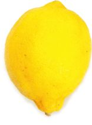
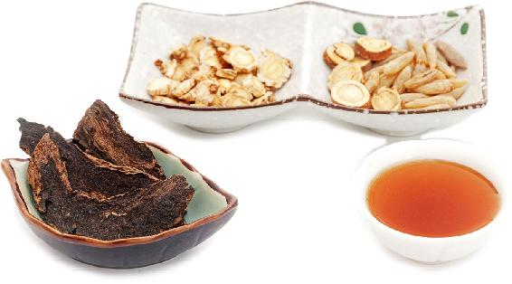
蜂蜜能滋养脾胃。蜂蜜的来源是花蜜，花蜜是百花的精华，它在采集时混合了蜜蜂分泌的酶，就像人类酿造的酒、酱、醋一样，经过了营养转化的过程，因而更加滋补，更容易被人体吸收。
红枣也是滋养脾胃的。红枣偏温，搭配偏凉性的蜂蜜正合适。
身体瘦弱，觉得自己吸收功能不好，怎么吃都不胖的人，可以用这道茶饮来温养脾胃。
【原料】
红枣250克、蜂蜜半瓶。
【做法】
【功效】
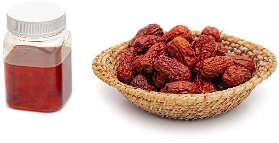
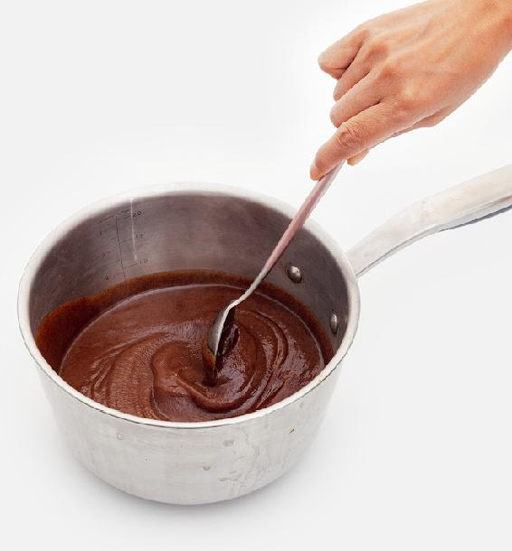
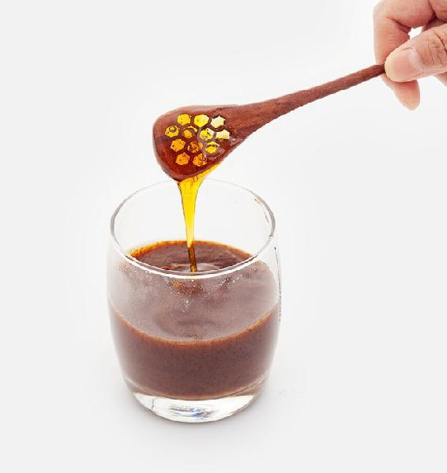
允斌叮嘱
蜂蜜喝多了容易便溏或腹泻的人可以改喝这道蜂蜜红枣茶。
怎样快速去枣核：
方法一：把红枣放在案板上，用菜刀横过来把红枣拍扁，红枣裂开，核就好取了。
方法二：取一个带蒸格的锅，把红枣竖着放在蒸格的洞眼上，用一根筷子从一头往下捅，就可以轻松地把枣核捅出来。
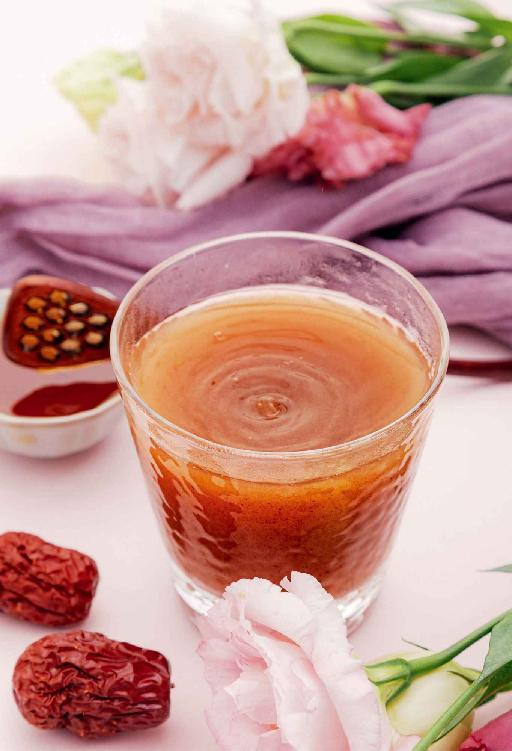
阴虚内热的人，很容易上虚火，觉得口干、鼻子干，咽喉也干痛，但是没有什么痰。这种火不是实火，可以喝一些玄麦甘桔茶来滋阴降火。
玄麦甘桔茶出自清代顾世澄所著《疡医大全》，是一道非常经典的中医茶饮方，能润肺滋阴，生津止渴。
【原料】
玄参20克、麦冬20克、桔梗15克、甘草5克、蜂蜜适量。
【做法】
将玄参、麦冬、桔梗、甘草放入锅中，用水煮开，加少量蜂蜜调味。
【功效】
清热滋阴，调理阴虚火旺、虚火上浮、口鼻干燥、咽喉干痛。
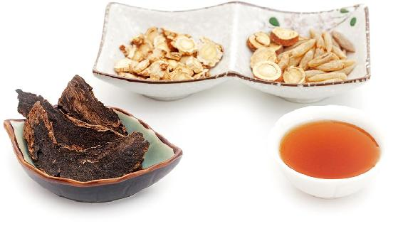
允斌叮嘱
读者评论
失眠用了，效果对症，挺好。给我妈也配了，她喝了没几次能睡到3点了，以前睡的时间很短。
——小米儿
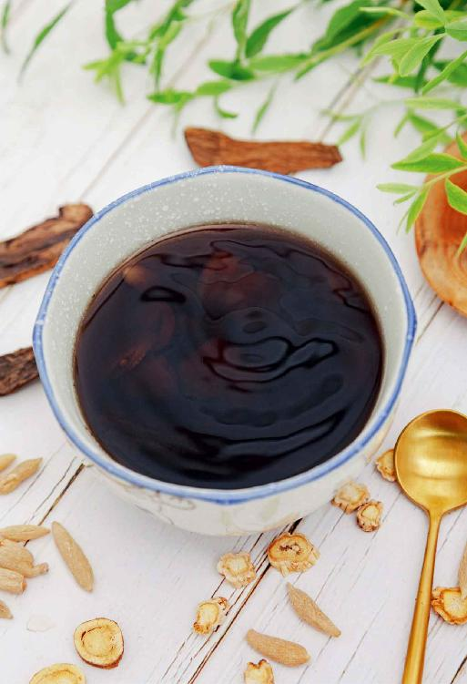
【原料】
新鲜松针1大把、新鲜柠檬1个、蜂蜜适量（松针的处理和储存方法详细说明可以参见本书222页）。
【做法】
【功效】
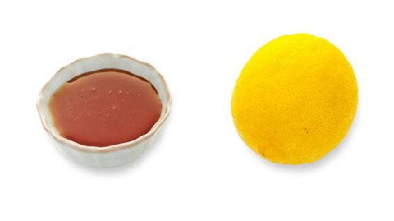
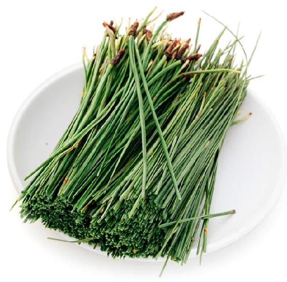
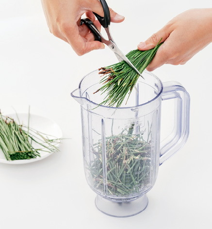
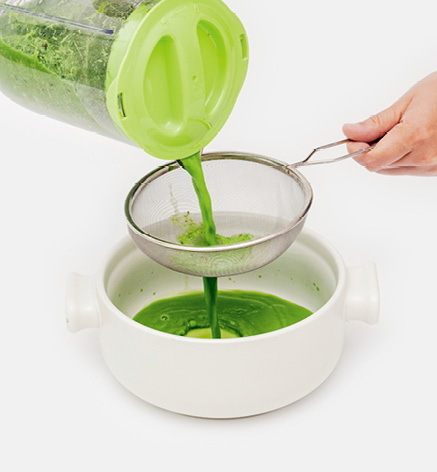
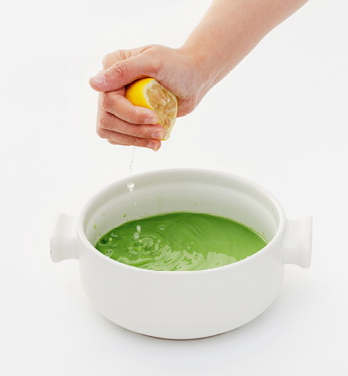
允斌叮嘱
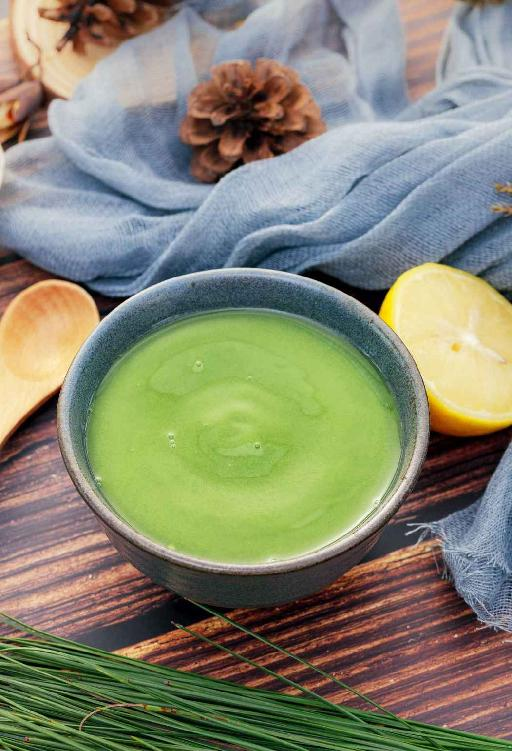
人体运行气血的通道包括“经脉”和“络脉”两部分。经脉是一条条的线，而络脉是遍布全身的网。中医学认为，久病入络。慢性病往往由络脉瘀阻形成。如果我们时刻保持络脉畅通，就能不生病、少生病，有病也好得快。
有两样药食同源的食材通络脉的效果都很好，一个是橘络，偏重于疏通我们络脉中的痰和瘀；第二个是丝瓜络，偏重于疏通我们络脉中的风和湿。
【原料】
丝瓜络90克、干橘络90克、红糖10小块。
【做法】
【功效】
疏通络脉瘀阻，亚健康人群的天然保健佳饮。
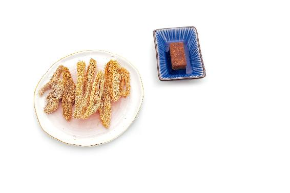
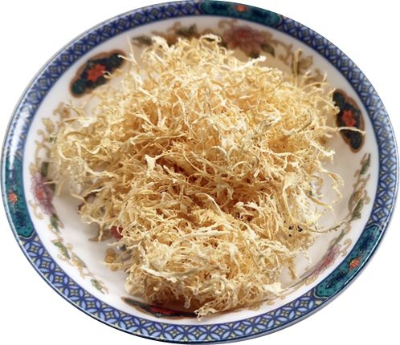
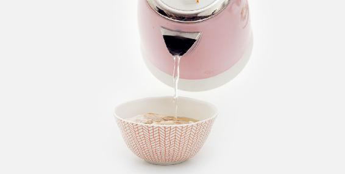
读者评论
——口天大侠
——一丹
——向日葵（年年有余）
——cherry
——高鑫
——tsui wah
——春晓
有的人每天早上起来总觉得面部有点水肿，到下午就好了。这是脾虚湿气重引起的，最好在睡前3小时内不要喝水。早上起来可以喝这道薏米茶来帮助消肿。
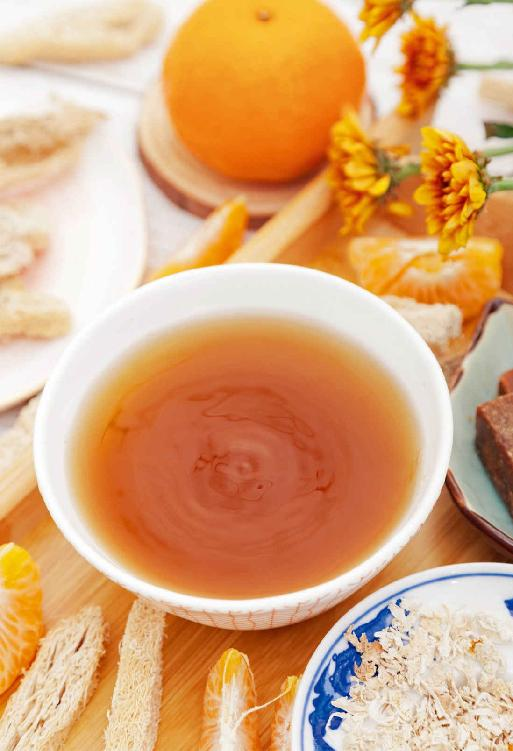
【原料】
薏米600克、炙甘草10克。
【做法】
【功效】
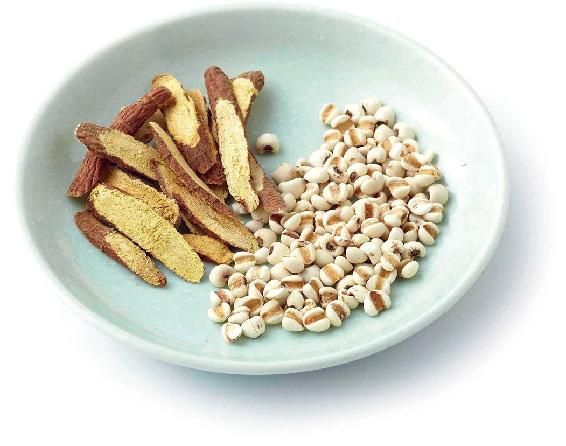
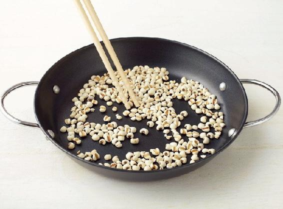
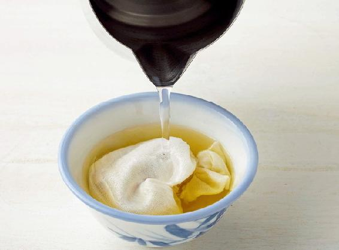
允斌叮嘱
孕妇忌食薏米。脾胃虚寒的人也要少吃。
读者评论
我们的健康是在生活的饮食中得到的，最好的医生就是我们自己，最好的药就来自我们的厨房。愿每个人都能从合理的饮食开始，希望我们的亲人和朋友都能健康地活着。我从关注老师的公众号起就一直改善自己的饮食，现在身体也越来越好了。
——张文倩
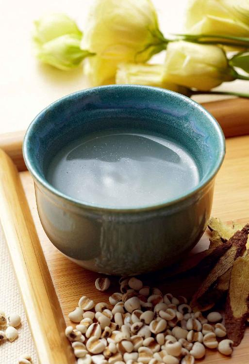